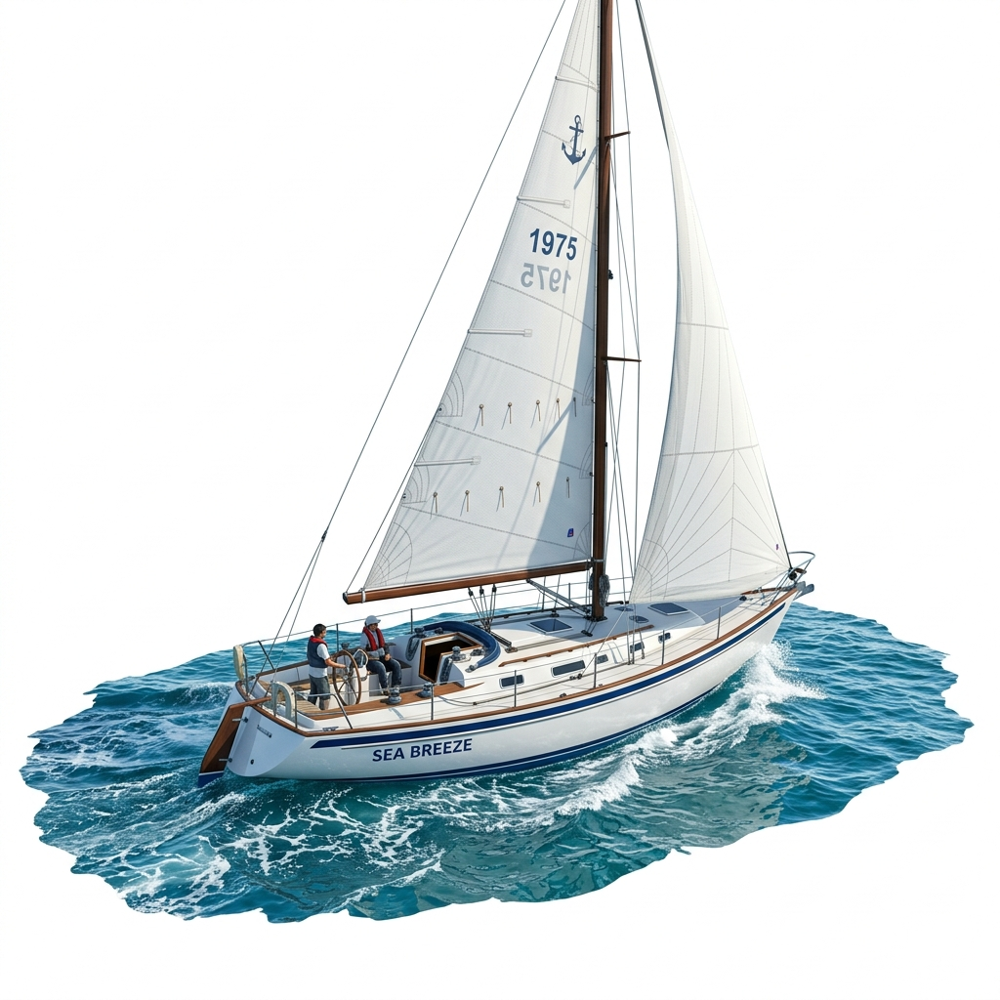
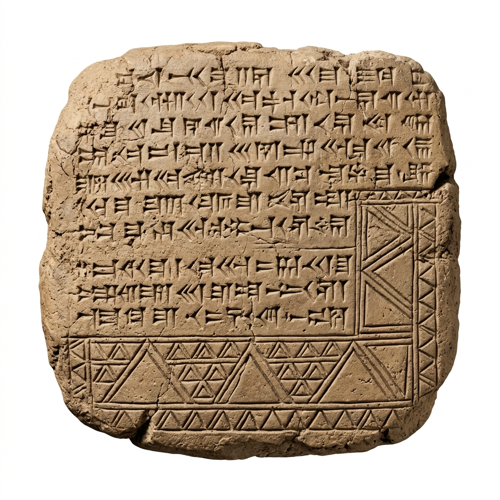
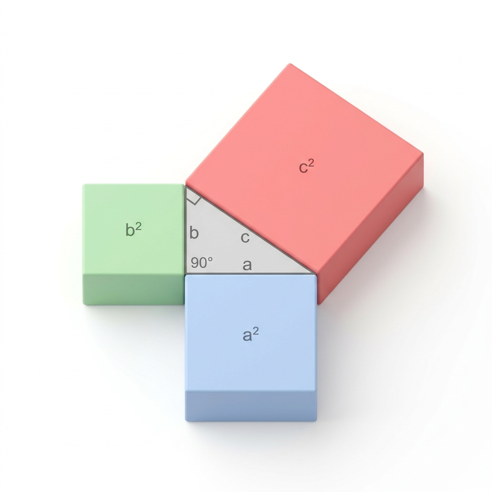
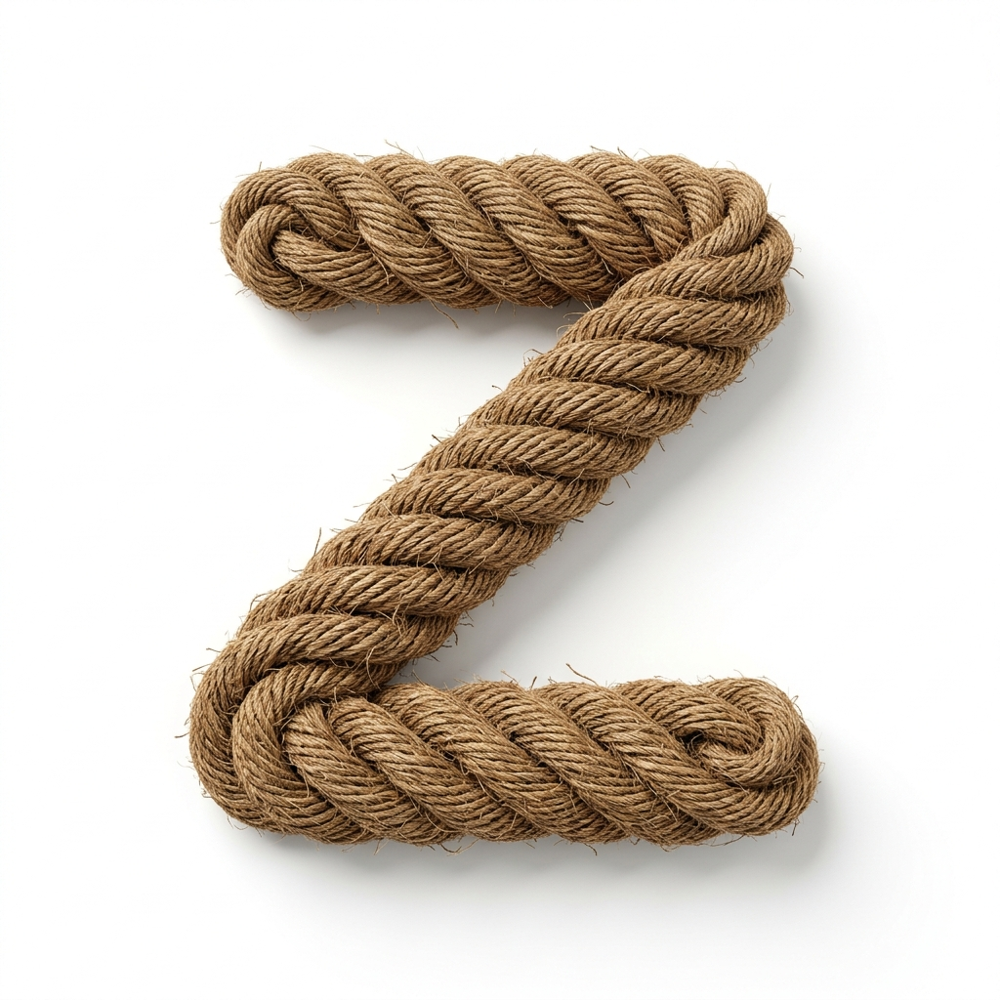
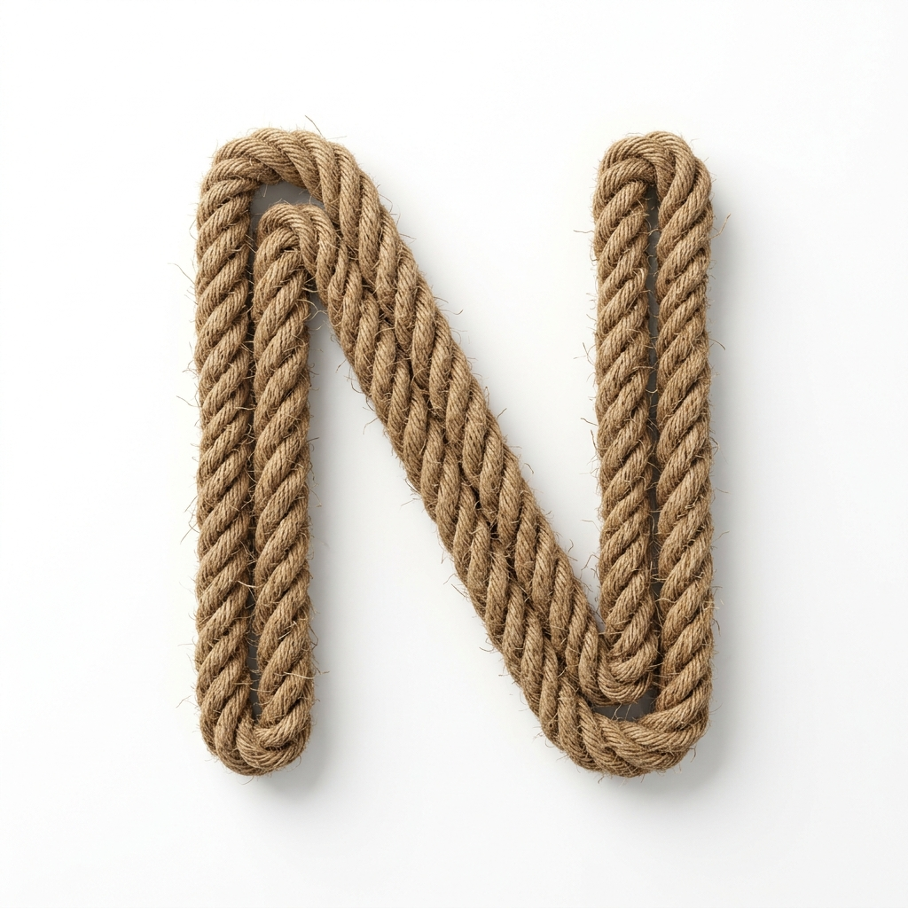

| Tipo de ángulo | Medida | Representación | Ejemplo |
|---|---|---|---|
| Agudo | Menor de $90^\circ$ | $45^\circ$ | |
| Recto | Igual a $90^\circ$ | $90^\circ$ | |
| Obtuso | Mayor de $90^\circ$ y menor de $180^\circ$ | $120^\circ$ | |
| Llano | Igual a $180^\circ$ | $180^\circ$ | |
| Cóncavo o reflejo | Mayor de $180^\circ$ y menor de $360^\circ$ | $240^\circ$ | |
| Completo | Igual a $360^\circ$ | $360^\circ$ | |
| Nulo | Igual a $0^\circ$ | $0^\circ$ |
Los ángulos están presentes en la arquitectura, la astronomía, la ingeniería y la navegación. Por ejemplo, los drones utilizan ángulos para calcular trayectorias precisas y mantener estabilidad en el vuelo.
El sistema sexagesimal (base 60) proviene de los babilonios hace más de 4.000 años. Aún hoy lo usamos para medir ángulos y el tiempo (60 segundos en un minuto, 60 minutos en una hora).
En topografía militar y cartografía geodesia, se utilizan los grados centesimales para mediciones precisas de terrenos, pues dividen el ángulo recto en 100 partes iguales en lugar de 90, lo que simplifica sustancialmente los cálculos métricos.
Un robot de exploración gira $85^\circ 40' 25''$ en sentido horario sobre su eje y luego gira $47^\circ 32' 15''$ en sentido antihorario para recalibrar su curso.
¿Cuál es el ángulo neto de rotación del robot desde su orientación inicial?
Se suman grados, minutos y segundos de forma independiente. Si los segundos o minutos igualan o superan los 60, se realiza una reducción trasladando cada grupo de 60 como una unidad al orden superior.
Se multiplican los grados, minutos y segundos de forma independiente por el número entero. Posteriormente, se realiza la reducción de segundos a minutos, y de minutos a grados.
Sobre una circunferencia, un ángulo central $\alpha$ determina un arco $AB$. Se dice que la medida de un ángulo central $\alpha$ es 1 radián (1 Rad) si la longitud del arco $AB$ que le corresponde es exactamente igual a la longitud del radio ($r$) de la circunferencia.
"Un radián es la medida de un ángulo central de una circunferencia cuyo arco subtendido mide igual que el radio de la misma."
Puesto que la longitud de la circunferencia completa es $2\pi r$, una vuelta completa equivale a $2\pi\text{ rad}$. Por lo tanto, establecemos la equivalencia fundamental para conversiones:
Planteamos la proporción simple a partir de $180^\circ = \pi\text{ Rad}$:
Simplificando la fracción por 45 (dividendo numerador y denominador):
Reemplazamos el valor directo de $\pi\text{ Rad}$ por $180^\circ$ en la expresión:
Un satélite geoestacionario recorre un arco angular de $\frac{2\pi}{5}\text{ Rad}$ en su órbita circular exterior. ¿A cuántos grados sexagesimales equivale este recorrido?

El timón de un buque gira un ángulo de $45^\circ 12' 30''$ a estribor y luego hace un ajuste adicional de $12^\circ 50' 45''$. ¿Cuál es el ángulo de giro total?
El Teorema de Pitágoras establece que, en todo triángulo rectángulo, el cuadrado de la longitud de la hipotenusa (el lado opuesto al ángulo recto) es igual a la suma de los cuadrados de las longitudes de los catetos (los dos lados que forman el ángulo recto).
Imagina que estás midiendo la distancia entre dos puntos en una ciudad que están conectados por calles que forman ángulos rectos.
Problema: Si tienes una distancia horizontal de $3\text{ km}$ y una vertical de $4\text{ km}$, ¿cuál sería la distancia en línea recta entre los puntos A y B?
SoluciónSe calcula la hipotenusa $a$ mediante la suma de los cuadrados:

Aunque este resultado se asocia históricamente con el matemático griego Pitágoras, la relación geométrica ya era conocida y aplicada siglos antes. Los antiguos egipcios la utilizaban para trazar ángulos rectos perfectos en la construcción de pirámides. Asimismo, los babilonios la plasmaron en tablillas de arcilla en escritura cuneiforme (como la tablilla Plimpton 322) cerca del año 1800 a.C. ¡Hoy existen más de 400 demostraciones distintas!
Si se conoce la hipotenusa $a$ y uno de los catetos ($c$), despejamos el cateto faltante ($b$):
Problema: Una escalera de $10\text{ m}$ está apoyada sobre una pared. Su base está a $6\text{ m}$ de distancia de la pared. ¿Qué altura alcanza la escalera?
Una terna pitagórica consiste en tres números enteros positivos $(a, b, c)$ tales que cumplen la relación $a^2 + b^2 = c^2$.
| Terna $(a, b, c)$ | Comprobación |
|---|---|
| $(3, 4, 5)$ | $3^2 + 4^2 = 9 + 16 = 25 = 5^2$ |
| $(5, 12, 13)$ | $5^2 + 12^2 = 25 + 144 = 169 = 13^2$ |
| $(8, 15, 17)$ | $8^2 + 15^2 = 64 + 225 = 289 = 17^2$ |
* Propiedad: Si multiplicamos una terna por cualquier entero (ej. $2 \times (3,4,5) = (6,8,10)$), la nueva terna obtenida también es una terna pitagórica.

20 cm² 30 cm² ?Una escalera de $65\text{ dm}$ de longitud está apoyada sobre una pared vertical. Si el pie de la escalera dista $25\text{ dm}$ de la pared:
¿A qué altura (h) se apoya la escalera en la pared?
Letras N y Z: Ancho: $10\text{ cm}$, Alto: $24\text{ cm}$.


Letra X: Ancho total: $16\text{ cm}$, Alto total: $30\text{ cm}$. Consta de dos diagonales cruzadas.
Las razones trigonométricas son las relaciones matemáticas que se establecen entre las longitudes de los lados de un triángulo rectángulo con respecto a uno de sus ángulos agudos. Para un ángulo $\alpha$, las tres razones principales son:
Es la relación entre la longitud del cateto opuesto al ángulo $\alpha$ y la hipotenusa.
Es la relación entre la longitud del cateto adyacente (o contiguo) al ángulo $\alpha$ y la hipotenusa.
Es la relación entre la longitud del cateto opuesto al ángulo $\alpha$ y el cateto adyacente.
Existen otras tres razones, que son las inversas multiplicativas de las principales:
Las razones trigonométricas son fundamentales en topografía y navegación. Por ejemplo, si un ingeniero desea conocer la altura (h) de un edificio sin medirla directamente, puede situarse a una distancia (d) conocida de su base y medir el ángulo de elevación ($\theta$) hasta la cima usando un teodolito.
Utilizando la función tangente, la relación matemática se define como:
Las razones trigonométricas tienen sus orígenes en la antigua Grecia, donde se desarrollaron para resolver problemas de astronomía y navegación. El matemático griego Hiparco de Nicea (siglo II a.C.) es reconocido como el "padre de la trigonometría" por construir la primera tabla de cuerdas. Más tarde, matemáticos indios como Aryabhata (siglo VI) introdujeron el concepto de seno moderno, y en el mundo islámico medieval, científicos como Al-Battani perfeccionaron la tangente y las otras razones trigonométricas.
El uso de la trigonometría no está limitado a la geometría terrestre. También es esencial en la astronomía, donde se utiliza para calcular las distancias a las estrellas y planetas. Por ejemplo, el paralaje estelar es una técnica basada en la trigonometría que mide la distancia a estrellas cercanas al observar su cambio de posición aparente desde lados opuestos de la órbita terrestre.
Para recordar con facilidad qué funciones trigonométricas son positivas en cada cuadrante (ordenados del I al IV), se utiliza la popular frase "TODOS SIN TACOS":